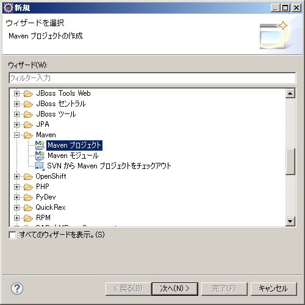
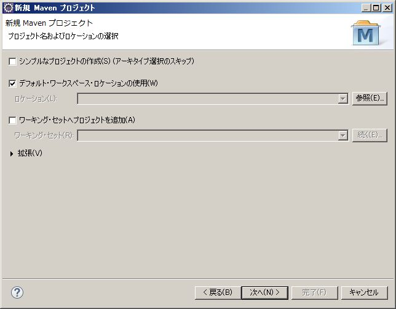
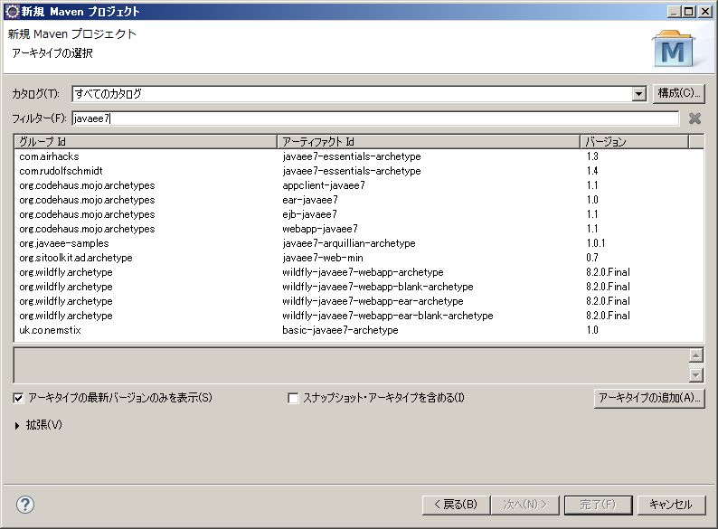
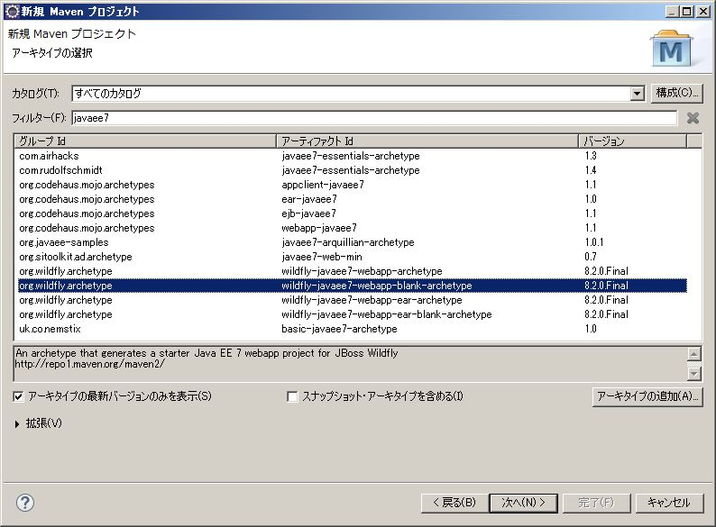
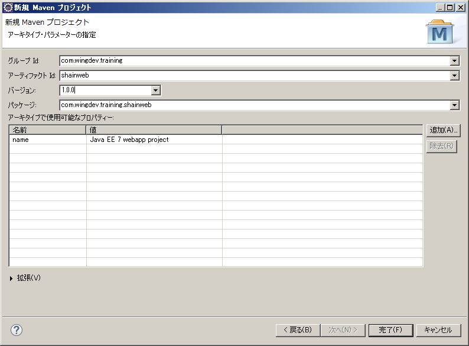
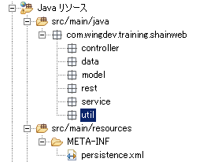

3. プロジェクトの作成¶
3.1. Maven プロジェクトの作成¶
C:\tool\pleiades\eclipse 内の eclipse.exe を起動します。
メニューの「ファイル(F)」->「新規(N)」->「その他」を指定します。
- 「ウィザードを選択」画面が表示されます。「Maven」配下の「Maven プロジェクト」を選択します。「次へ(N)>」ボタンを押下します。
「新規 Maven プロジェクト」画面が表示されます。変更せず「次へ(N)>」ボタンを押下します。
- 「アーキタイプの選択」画面が表示されます。「フィルター(F)」に「javaee7」を入力するとアーキタイプが絞り込まれます。
一覧から以下のものを選択し、「次へ(N)>」ボタンを押下します。
グループ Id アーティファクト Id バージョン org.wildfly.archtype wildfly-javaee7-webapp-blank-archetype 8.2.0.Final 「アーキタイプ・パラメーターの指定」画面が表示されます。以下の値を設定して「完了(F)」を押下します。
名前 設定文字列 グループ Id: com.javadera アーティファクト Id: shainweb バージョン: 1.0.0 パッケージ: com.javadera.shainweb - 「プロジェクト・エクスプローラー」に「shainweb」が追加されます。「マーカー」に「JPA 問題」の警告が表示されますが、後ほど修正します。
Java ソースコードを保存するためのパッケージを作成します。以下のパッケージを src/main/java 配下に作成してください。
パッケージ名 com.javadera.shainweb.controller com.javadera.shainweb.data com.javadera.shainweb.model com.javadera.shainweb.rest com.javadera.shainweb.service com.javadera.shainweb.util
{kind=link}
{kind=link}
{kind=link}
{kind=link}
作成されたプロジェクトを「プロジェクト・エクスプローラー」から開くと下図のようになっています (一部のみ拡大表示)。
3.2. JPA (Java Persistence API) の設定ファイル編集¶
JPA は Java EE アプリケーションがデータベースアクセスを行う際の標準 API です。
- 「プロジェクト・エクスプローラー」の中央よりやや上部の src/main/resources/META-INF 配下にある、persistence.xml をダブルクリックしてください。
「Hibernate」タブを表示し、以下の値を設定します。
名前 設定文字列 データベース方言(D): PostgreSQL ドライバー･クラス(R) org.postgresql.Driver 接続 URL(U): jdbc:postgresql:shainweb デフォルト・スキーマ: public デフォルト・カタログ: (空欄) ユーザ名(N): postgres パスワード(P): PostgreSQL インストール時に設定したパスワード 設定が終了したら「ctrl ＋ s キー」を押下して保存します。
「ソース」タブを選択します。これまでに設定した値が XML 形式で保存されています。
<jta-data-source> タグの値で「shainwebDS」となっている部分を「ShainwebDS」に修正します。
さらに、<property> タグの name 属性値が「hibernate.hbm2ddl.auto」となっている行を削除します。
最終的に persistence.xml は以下のようになります(一部省略)。
<?xml version="1.0" encoding="UTF-8"?>
<persistence version="2.1"
xmlns="http://xmlns.jcp.org/xml/ns/persistence" xmlns:xsi="http://www.w3.org/2001/XMLSchema-instance"
xsi:schemaLocation="
http://xmlns.jcp.org/xml/ns/persistence
http://xmlns.jcp.org/xml/ns/persistence/persistence_2_1.xsd">
<persistence-unit name="primary">
<!-- If you are running in a production environment, add a managed
data source, this example data source is just for development and testing! -->
<!-- The datasource is deployed as WEB-INF/shainweb-ds.xml, you
can find it in the source at src/main/webapp/WEB-INF/shainweb-ds.xml -->
<jta-data-source>java:jboss/datasources/ShainwebDS</jta-data-source>
<properties>
<!-- Properties for Hibernate -->
<property name="hibernate.show_sql" value="false" />
<property name="hibernate.dialect" value="org.hibernate.dialect.PostgreSQLDialect"/>
<property name="hibernate.connection.driver_class" value="org.postgresql.Driver"/>
<property name="hibernate.connection.url" value="jdbc:postgresql:shainweb"/>
<property name="hibernate.default_schema" value="public"/>
<property name="hibernate.connection.username" value="postgres"/>
<property name="hibernate.connection.password" value="pass#1234"/>
</properties>
</persistence-unit>
</persistence>
{kind=link}
{kind=link}
{kind=link}
{kind=link}
{kind=link}